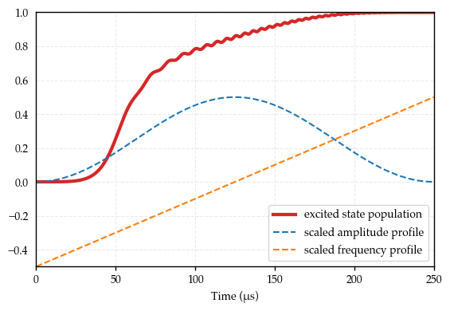

using IonSim
using QuantumOptics
import PyPlot
const plt = PyPlot
PyPlot
# set some plot configs
plt.matplotlib.rc("xtick", top=false)
plt.matplotlib.rc("ytick", right=false, left=false)
plt.matplotlib.rc("axes", labelsize=10, titlesize=20, grid=true)
plt.matplotlib.rc("axes", linewidth=1)
plt.matplotlib.rc("grid", alpha=0.25, linestyle="--")
plt.matplotlib.rc("font", family="Palatino", weight="medium")
plt.matplotlib.rc("figure", figsize=(5.75,4))
plt.matplotlib.rc("xtick.major", width=1)
plt.matplotlib.rc("ytick.major", width=1)
# We'll linearly sweep through the laser's frequency from -125 kHz to +125 kHz (detuned from the carrier transition)
# in a time Tp
Tp = 250 # the length of time of the frequency chirp in μs
Δϕ = Tp * 1e-3 # this is equal to half the detuning range we will chirp the laser over multiplied by the timescale (1e-6)
L.ϕ = t -> 2π * (-Δϕ/2 + (Δϕ / Tp) * t) * t
# tr = 33
# function Ω(t)
# if t < tr
# return E * sin(2π * t / 4tr)^2
# elseif tr <= t <= 150 - tr
# return E
# elseif 150 - tr < t < 150
# return E * sin(2π * (t - 150) / 4tr)^2
# else
# return 0
# end
# end
# function Ω2(t)
# T = Tp
# σ = T / (2*√2)
# E * exp(-(t - T/2)^2 / 2σ^2)
# end
function Ω3(t)
T = Tp
E * sin(π * t/Tp)^2
end
L.E = Ω3;
UndefVarError: L not defined
Stacktrace:
[1] top-level scope at In[3]:6
h = hamiltonian(T, rwa_cutoff=Inf, lamb_dicke_order=1)
tout, sol = timeevolution.schroedinger_dynamic(0:.1:Tp, C["S-1/2"] ⊗ mode[0], h)
plt.plot(tout, expect(ionprojector(T, "D-1/2"), sol), lw=3, color="C3", label="excited state population")
plt.plot(tout, @.(L.E(tout) / 2E), ls="--", label="scaled amplitude profile")
plt.plot(tout, @.(L.ϕ(tout) / (2π * Δϕ * tout)), ls="--", label="scaled frequency profile")
plt.xlim(tout[1], tout[end])
plt.legend(loc=4)
plt.ylim(-0.5, 1)
plt.xlabel("Time (μs)")
plt.tight_layout()
plt.savefig("/Users/josephbroz/Desktop/rap.png")
